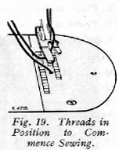
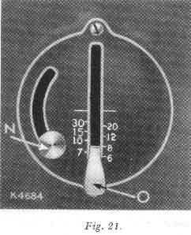
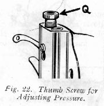
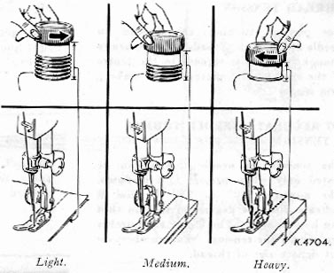
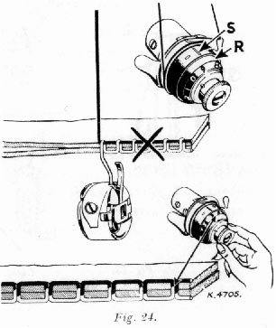
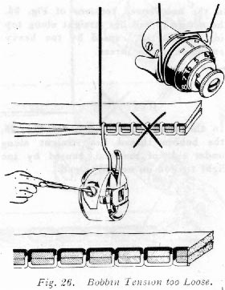
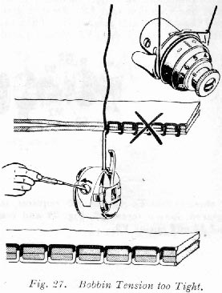

Hold end of needle thread with left hand and turn hand wheel over toward you until needle goes down and up again and thread take-up lever 9, Fig. 20, is at its highest point. Pull up needle thread and bobbin threa will come with it, as shown in Fig. 18.
Lay both threads back under presser foot diaonally across the feed, as shown in Fig. 19, to the right or left, depending upon which side of needle the material is to be located, so that when presser foot is lowered, the threads will be firmly jeld between the feed and the presser foot.
NOTE :
Most materials require only guiding for best sewing results. However, the miracle fabrics such as nylons, synthetic fabrics, blends with various rayons, puffed weaves, sheers, jerseys and tricots, which, by their nature require light pressure, also require support in the form of holding the material taut at the back and front of the needle as the needle enters the fabric.
This support assures a smooth, even seam. Never pull the material along when stitching.
Never operate the machine without cloth under the presser foot.
The slide over the bobbin case should be kept closed when the machine is in operation.
The hand wheel must always turn over toward the operator.
The numerals on the stitch indicator plate denote the approximate number of stitches per inch.
To change length of stitch, loosen thumb screw N and move it to bottom of slot. Move stitch regulating lever O until its upper side is in line with the number of the desired length of stitch.
Move thumb screw N until stitch regulating plate (inside) touches lever O. Tighten thumb screw N.
The machine will then make the indicated number of stitches to the inch in either a forward direction (lever O at its lowest position) or a reverse direction (lever O at highest position).
The longest stitch, No. 6 on the stitch regulator, adjusted by lever O, Fig. 21, is found satisfactory for basting. These basting stitches can be easily removed by clipping every sixth stitch and withdrawing the long, continuous thread.
Machine basting is firmer, more even and much quicker than hand basting.
Use a shorter stitch when sewing bias or curved seams to increase the elasticity of the seam and to prevent seam failure under strain. No change in tensions is required.
Pivot on eye of needle. Stop machine when needle is in this position. Raise presser foot, turn work as desired, lower the presser foot and resume sewing.
Stop machine with thread take-up lever 9, Fig. 20, at its highest position. Raise presser foot, draw the fabric back and to the left, and sever the threads on thread cutter P, Fig 20. Place ends of threads under presser foot, as shown in Fig. 19.
To move the material from you, push down stitch regulator lever O, Fig. 21, to the numeral of stitch desired.
To feed the material toeard you, raise stitch regulator to the point where it will make the desired length of stitch.
The direction of feed can be reversed at any point of a seam without removing work from machine.
The reverse feed makes it easy to "back stitch" and to fasten ends of seams.
The amount of pressure influences the case with which you achieve a straight seam and uniform stitching. The pressure should be heavy enough to prevent side creepage of material and light enough to carry the material without marking.
The surface finish on fabrics, as well as their weight, determines amount of pressure to be applied. The glazed surface of chintz and polished cotton, the loose map surface of satin, the deep piled surface of velvet, the delicate and broken surface of lace and brocade, all require a lighter pressure.
To set a light pressure, turn thumb screw Q, Fig. 22, upward until fabric moves easily under presser foot without slipping and without showing feed marks.

To set a heavy pressure, turn thumb screw Q downward until the fabric moves easily and the seam edges are carried evenly by the foot and the feed. Heavy, spongy fabrics like towelling, chenille, coating, etc., require heavier pressure.
For perfect stitching, the tension on needle and bobbin threads must be heavy enough to pull the threads to the centre of the the thickness of material and make a firm stitch.
The tension on needle thread can be tested only when presser foot is down. The numerals "0" to "9" on dial B indicate different degrees of tension that can be obtained. The higher the number the greater the tension. The numbers do not denote size of thread.
When tension has been correctly set for average sewing, note number at indicator line S. This setting may be quickly regained should the tension be altered for special work or change in size of thread.

In the unbalanced tensions of Fig. 24, the needle thread lies straight along top side of material, caused by too heavy tension on needle thread.
In the unbalanced tensions of Fig. 25, the bobbin thread lies straight along under side of material, caused by too light tension on needle thread.

The tension on bobbin thread is regulated by the screw of the tension spring, as shown in Fig. 26.
When adjusting bobbin tension, a slight turn of the screw is all that is needed to make a fine adjustment.
To increase tension, turn screw gradually over to the right (Fig. 26).
To decrease tension, turn screw gradually over to the left (Fig. 27).